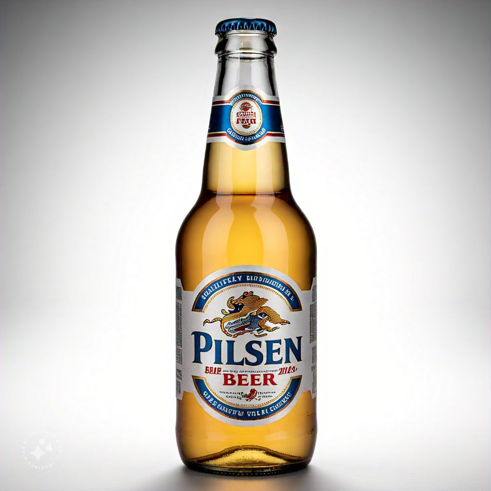

Ipas
A IPA é caracterizada pelo seu amargor e aroma, devido à maior concentração de lúpulo.
Pilsen
A Pilsen, uma cerveja clássica e refrescante, com seu sabor amargo suave e aroma fresco, é a companheira perfeita para momentos de relaxamento e convívio
Pale Ale
"A Pale Ale, uma cerveja vibrante e refrescante, com notas cítricas e um toque de amargor, é a escolha perfeita para quem busca um sabor intenso e renovador.